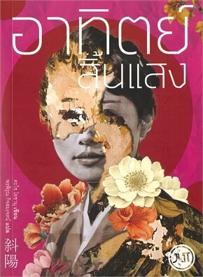

อาทิตย์สิ้นแสง
"แม้ในวันที่ไร้แสงสว่าง ชีวิตที่เหลืออยู่ จึงมีไว้เพื่อดิ้นรน"
ผลงานชิ้นเอกอีกเล่มของ ดาไซ โอซามุ ที่ฉายภาพการล่มสลายของยุคสมัยได้อย่างงดงามและรวดร้าวที่สุด เล่มนี้เปรียบเสมือนหมุดหมายสำคัญที่ทำให้เกิดคำว่า
ชะโยโชกุ หรือ "ชนชั้นอาทิตย์สิ้นแสง" ซึ่งใช้เรียกกลุ่มชนชั้นสูงที่สูญเสียทุกอย่างหลังสงครามโลกครั้งที่ 2
เนื้อเรื่องย่อ
เรื่องราวเล่าผ่านมุมมองของ คาซุโกะ หญิงสูงศักดิ์ที่ชีวิตต้องพลิกผันอย่างรุนแรงหลังญี่ปุ่นพ่ายแพ้สงครามโลกครั้งที่ 2 ครอบครัวขุนนางของเธอสูญเสียทรัพย์สิน ยศฐาบรรดาศักดิ์ และสถานะทางสังคม จนต้องย้ายไปอยู่นอกเมือง ท่ามกลางโลกใบเก่าที่กำลังพังทลาย คาซุโกะต้องดูแล ท่านแม่ ผู้เป็นสัญลักษณ์สุดท้ายของชนชั้นสูงอันสง่างาม พร้อมกับการกลับมาจากสงครามของ นาโอจิ น้องชายผู้สิ้นหวัง พยายามต่อต้านสังคม และจมลงสู่สุราและยาเสพติด คาซุโกะจึงต้องเลือกระหว่างการยอมจำนนต่อโชคตากรรม หรือการลุกขึ้นมาปฏิวัติชีวิตตนเองเพื่อไขว่คว้า "ความรัก" และ "การมีชีวิตอยู่" ในแบบของเธอเอง
ทำไมถึงไม่ควรพลาด
การปะทะระหว่างโลกเก่าและโลกใหม่
ถ่ายทอดภาพความย่อยยับของชนชั้นสูงได้อย่างละเมียดละไม ทั้งความงดงามที่กำลังดับสูญ และความจริงอันโหดร้ายของโลกยุคใหม่ที่บีบให้มนุษย์ต้องดิ้นรน
ตัวละครหญิงที่ทรงพลังและสู้ชีวิต
แตกต่างจากตัวละครอื่นๆ ของดาไซที่มักยอมจำนน คาซุโกะเป็นตัวแทนของความหวังและการปฏิวัติ เธอเลือกที่จะก้าวผ่านความโศกเศร้าและสร้างนิยามชีวิตใหม่ด้วยตัวเอง
ภาษาและเสน่ห์วรรณศิลป์อันเป็นเอกลักษณ์
มีภาษาที่ประณีต สวยงาม และเต็มไปด้วยมิติทางอารมณ์ในการอธิบายความร่วงโรยของชีวิต ทำให้ความโศกเศร้าและความพังทลายในเรื่องไม่ได้ดูหม่นหมองจนน่าอึดอัด แต่กลับมีความงดงาม จับใจ และทิ้งรสชาติอันลึกซึ้งไว้
ทำไมเล่มนี้ถึงกลายเป็นวรรณกรรมในดวงใจของใครหลายคน
หนังสือเล่มนี้เข้าถึงอารมณ์ของคนที่กำลังเผชิญหน้ากับความเปลี่ยนแปลงในชีวิตได้อย่างลึกซึ้ง หลายคนที่เคยรู้สึกเหมือน "โลกใบเดิมกำลังพังทลาย" ไม่ว่าจะจากเรื่องงาน ชีวิตส่วนตัว หรือความสัมพันธ์ พอได้อ่านแล้วจะรู้สึกเหมือนมีคนเข้าใจ เพราะตัวละครเอกอย่างคาซุโกะไม่ได้ถูกเขียนมาให้เก่งเพอร์เฟกต์หรือไร้ความกลัว เธอมีบาดแผล มีความสับสน แต่ความเด็ดเดี่ยวในการเลือกเส้นทางชีวิตของตัวเองกลับกลายเป็นพลังใจชั้นดีที่ส่งมาถึงคนอ่าน